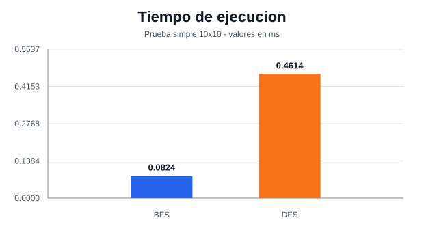
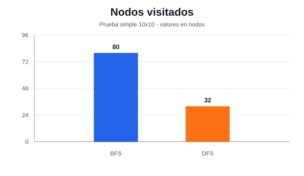
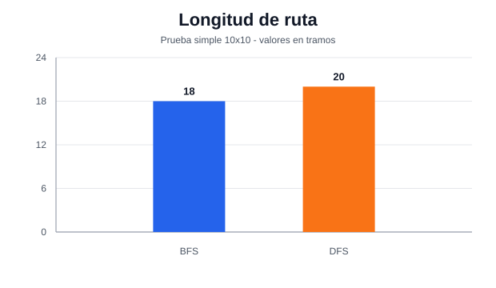
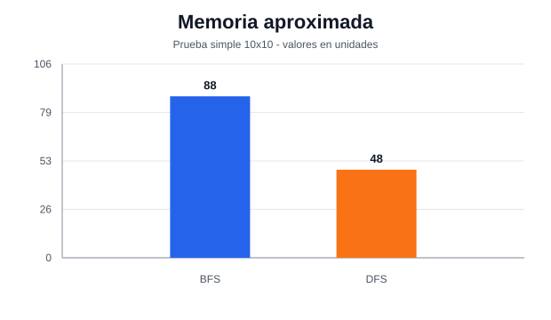

Datos usados
| Algoritmo | Tiempo | Nodos visitados | Ruta | Max cola/pila | Memoria |
|---|---|---|---|---|---|
| BFS | 0.0824 ms | 80 | 18 | 8 | 88 |
| DFS | 0.4614 ms | 32 | 20 | 16 | 48 |
Graficos de barras generados desde salida_resultados/prueba_simple_resultados.csv




| Algoritmo | Tiempo | Nodos visitados | Ruta | Max cola/pila | Memoria |
|---|---|---|---|---|---|
| BFS | 0.0824 ms | 80 | 18 | 8 | 88 |
| DFS | 0.4614 ms | 32 | 20 | 16 | 48 |